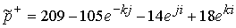
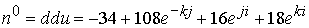
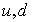

|
В. И. ЕЛИСЕЕВ ВВЕДЕНИЕ В МЕТОДЫ ТЕОРИИ
ФУНКЦИЙ ПРОСТРАНСТВЕННОГО КОМПЛЕКСНОГО ПЕРЕМЕННОГО |
|
Продолжение 2 из 3. 8.8 Сумма единичных глюонных вихрей с весовыми коэффициентами определяет структуру поля микрочастицы.
Комплексное пространство определило симметрию, которая отвечает за это фундаментальное свойство заряда быть положительным и отрицательным. Знак заряда не зависит от положения заряда в пространстве, находится заряд в верхнем полупространстве или в нижнем полупространстве. В связи с этим понятие изоспина можно уточнить. Изоспин введен в формальном вспомогательном пространстве с условными осями
, которое называется изотопическим. Комплексное пространство не является формальным пространством и не имеет трех линейных осей. Комплексное пространство обладает и свойством формального изотопического пространства. Понятие изотопического спина увязано с зарядом, который определяется зарядом глюонного поля и знаками весовых коэффициентов, с которыми глюонные поля входят в суммарное глюонное поле микрочастицы. Исследование изоспина пионного триплета уточняет знак изоспина: для обозначения изоспина используем принятые обозначения в квантовой механики микрочастиц .Изоспин положителен для частиц, у которых глюонное поля электрического заряда определено в верхнем полупространстве (или изолированное направление глюонного поля электрического заряда совпадает с положительным направлением комплексной оси
). Изоспин отрицателен, если его изолированное направление образовано в нижнем полупространстве и совпадает с отрицательным направлением комплексной оси .Знак изоспина не обязательно совпадает со знаком заряда. Изолированное направление глюонного поля может быть положительным но образоваго в нижнем полупространстве и поэтому изоспин будет отрицательным. И также возможен вариант, когда отрицательный заряд образован в верхней полусфере пространства и его изоспин положителен. Эта симметрия вытекает из моделей главы 8.
Рассмотрим другой вариант стабильной частицы. Протон имеет кварковую композицию
. В весовых коэффициентах и единичных глюонных полей эта композиция дает два варианта:|
8.8.7 |
Из этих двух вариантов один дает протон другой антипротон. Это предстоит выбрать.
Антипротон можно образовать кварковой композицией
. В весовых коэффициентах гдюонных вихрей будем иметь выражения.
В связи с этим принимаем первое выражение из 8.8.7 за протон, а второе из 8.8.7 за антипротон.
Считается, что протон имеет спин равный +1. Следовательно глюонный электрический вихрь протона даже если он отрицателен, но направлен (или имеет проекцию положительную с коплексной третьей осью в пространстве) и сформирован в верхнем полупространстве то есть имеет положительную величину своего весового коэффициента, то частица имеет изоспин +1 и соответственно положительный заряд.
Протон, определенный через кварковую композицию
по определению квантовые числа протона спин, четность, изоспинАнтипротон, определенный через кварковую композицию
переходит через операцию зарядовой симметрии (которая неоднократно демонстрируется) в протон, изоспин которого равен 1/2
Таким образом, протон обладает способностью менять знак изоспина, сохраняя свою массу.
Нейтрон обладает аналогичной симметрией
,
квантовые числа
,
Установлено, что в ядерных взаимодействиях протон и нейтрон обладают противоположными изоспинами.
Нейтрон имеет кварковую композицию
. Запишем композицию в весовых коэффициентах . По комбинации знаков весовых коэффициентов и вихревых зарядов нейтрон не отличается от протона. Однако он нейтрален и поэтому необходимо рассмотреть разницу в величинах коэффициентахВычитая из этой разницы электронное антинейтрино в соответствии со схемой распада нейтрона получим
Эта разница определяет весовые коэффициенты распада нейтрального нейтрона на электрон и электронное антинейтрино по схеме, установленной в экспериментах
Согласно этой схеме один из кварков
d в композиции нейтрона переходит в кварк u выделяя электрон и электронное антинейтрино, так что электрон равенИтак электрон выражается в виде
В первом варианте нет учета кинетической энергии распада, которая составляет разницу в глюонных полях электрона вычисленных этими двумя способами
После определения энергии глюонных полей эта величина была вычислена.
Экспериментальная величина равна 0,762 Мэв. Расхождение составляет 23%.
Таким образом, рассмотрены четыре стабильных микрочастицы
Определены выражения суммарного глюонного поля каждой из частиц через весовые коэффициенты и вихревые единичные зарядовые поля.
|
|
8.8.8 |

Для каждой частицы значения весовых коэффициентов не меняется, если изменить знаки электрического и лептонного вихря.
|
8.8.9 |
Установленная симметрия есть следствие равенства масс единичных глюонных полей разных знаков.
|
8.8.10 |
Система глюонных полей составлена из наиболее стабильных частиц, для которых исследовано соответствие квантовых чисел физики микрочастиц со структурой этих глюонных полей. Система составлена для четырех частиц и содержит четыре неизвестных в виде единичных глюонных полей и четыре величины суммарного глюонного поля каждой микрочастицы.
Для определения масс зарядовых единичных глюонных полей в системе 8.8.9 необходимо вычислить суммарное глюонное поле микрочастиц. Энергетически микрочастица рассматривается как дефект массы в результате взаимодействия фундаментальных масс
|
|
8.8.11 |
где к- количество взаимодействующих фундаментальных масс,
-суммарная масса глюонного поля микрочастицы,
- масса частицы.
Формула представляет операционную замену интервала теории относительности на энергетические массы. (глава 7). Формула использовалась при вычислении энергии связи атомных ядер (глава 5), а также при исследовании радиоактивных распадов ядер (глава 6). Сходимость результатов с экспериментальными данными дает основание в применении этой формулы и в дальнейших расчетах.
Если известно суммарное поле микрочастицы, то масса частицы определяется из 8.8.11, если известна массы частицы, то глюонное поле определяется по формуле
|
8.8.12 |
Для определения единичных глюонных зарядовых полей, которые через весовые коэффициенты составляют суммарное глюонное поле, используем систему 8.8.9, в которой суммарные глюонные поля определены для стабильных частиц с известными массами.
Если известны единичные глюонные зарядовые массы, то по известным весовым коэффициентам будет определено суммарное глюонное поле микрочастицы и ее масса по формуле
|
8.8.13 |
Таким образом, если определить вклад каждого зарядового вихря в глюонное поле микрочастицы с соответствующими весовыми коэффициентами, вычисленными из кварковых композиций классификации микрочастиц и модами распада, то по формуле 8.8.13 вычисляются массы микрочастиц.
Согласно формулы 8.8.12 для наиболее стабильных частиц имеем:
В результате из 8.8.9 имеем систему
|
8.8.14 |
Решение системы 8.8.14 дает следующие значения величин единичных зарядовых вихрей.
|
8.8.15 |
Рассмотрим энергетическую структуру кварков на примере
Определим радиусы изолированных
|
8.8.16 |
Теоретическая физика дает величину сечения слабого взаимодействия
см. Вычисленная величина радиуса изолированных туннелей зарядовых вихрей находится в полном соответствии с этой величиной. Таким образом, до см Следовательно кварк может рассматриваться как точечная частица до величины этого радиуса. Вещество кварка сосредоточено в объеме радиуса см.Структура глюонного поля задает квантовые числа и массу микрочастиц.
Исследуем влияние квантовых чисел на структуру и массу микрочастиц на трехкомпонентной кварковой композиции барионов.
Резонанс
имеет кварковую структуру , которая задает глюонное поле в виде , которое представляет сумму глюонных составляющих исходного кваркаИзоспин определяется электрической составляющей глюонного поля частицы и в этой композиции он равен
, так как оно представляет утроенное поле глюонного поля исходного кваркаКварковый состав
представлен двумя микрочастицамиПротон входит в систему уравнений, т. е., поэтому имеет квантовые числа
Поворот глюонного поля в кварках
определяет суммарное поле композиции.
Вычисления дают массу резонанса
Мэв. Расхождение составляет 076%. Спин частицы, следуя предыдущим рассуждениям, равен 1/2 изоспин равен 3/2. Однако масса меньше экспериментальной и поэтому необходимо рассмотреть вариант с третьим поворотом глюонного поля в третьем кварке композиции. Тогда будем иметь. Вычисления дают Мэв. Расхождение составляет 9,3%. Спин равен3/2, изоспин равен 3/2.
Кварковая композиция представлена двумя частицами .
Нейтрон является как и протон исходной частицей для вычислений полей. Поэтому рассматриваем более подробно резонанс.
Если в кварках
повернуть (СР) лептонное поле, то получим суммарное глюонное поле композиции в видеВычисление массы дает величину
Мэв. Спин равен 1/2, изоспин равен 3/2. Четность положительная. .Если повернуть лептонное поле и в кварке
.
Вычисление массы дает
Мэв. Расхождение составляет 13%.Спин резонанса равен 3/2, так как повернуто лептонных составляющих в композиции из трех кварков. Изоспин равен также 3/2, так как имеем электрическую составляющую глюонного поля равную сумме трех электрических глюонных полей.
Мини оглавление:
[0], [1.1.1, 1.1.2, 1.1.3, 1.1.4, 1.1.5, 1.1.6, 1.1.7, 1.1.8, 1.2, 1.2.1, 1.2.2, 1.2.2.a, 1.2.2.b, 1.2.2.c, 1.2.2.d, 1.2.2.e, 1.2.2.f, 1.2.2.g, 1.2.2.h, 1.2.3, 1.3.1, 1.3.2, 1.3.3, 1.3.4, 1.3.5, 1.3.6, 1.4.1, 1.4.2, 1.5, 1.6, 1.7.1, 1.7.2, 1.7.3.1, 1.7.3.2, 1.7.3.3, 1.7.4.1, 1.7.4.2, 1.8.1], [2.1, 2.2],[3.1, 3.2, 3.3, 3.4.1, 3.4.2, 3.4.3, 3.4.4, 3.4.5],[4.1, 4.2, 4.3, 4.4],[5.1, 5.1.Рис.52, 5.2, 5.3, 5.4, 5.4.Т1, 5.4.Т2, 5.4.Т3, 5.5.1, 5.5.2, 5.5.3, 5.5.4],[6.1.1, 6.1.2, 6.2.1, 6.2.2, 6.2.3, 6.2.4, 6.2.5, 6.3, 6.4.1, 6.4.2, 6.5.1, 6.5.2],[7.1, 7.2, 7.3, 7.4, 7.5, 7.6, 7.7.1, 7.7.2, 7.8.1, 7.8.2, 7.8.3, 7.9],[8.1, 8.2.1, 8.2.2, 8.3, 8.4, 8.5, 8.6, 8.6.T1, 8.7, 8.8.1, 8.8.2, 8.8.3, 8.9.1, 8.9.2, 8.9.3, 8.10, 8.10.T2, 8.10.T3],[9.1, 9.2, 9.3, Рис.88, 89, 90, 91, 92, 93, 94, 95, 96, 97, 98, 99, 100],[10.1, 10.2, 10.3, 10.4, 10.5, 10.6, 10.7, 10.8, 10.9, 10.10, 10.11, 10.12, 10.13, 10.14, 10.15.1, 10.15.2, 10.16.1, 10.16.2, 10.17, 10.18],[11]
Размещенный материал является электронной версией книги: © В.И.Елисеев, "Введение в методы теории функций пространственного комплексного переменного", изданной Центром научно-технического творчества молодежи Алгоритм. - М.:, НИАТ. - 1990. Шифр Д7-90/83308. в каталоге Государственной публичной научно-технической библиотеки. Сайт действует с 10 августа 1998.
E-mail: mathsru@gmail.com